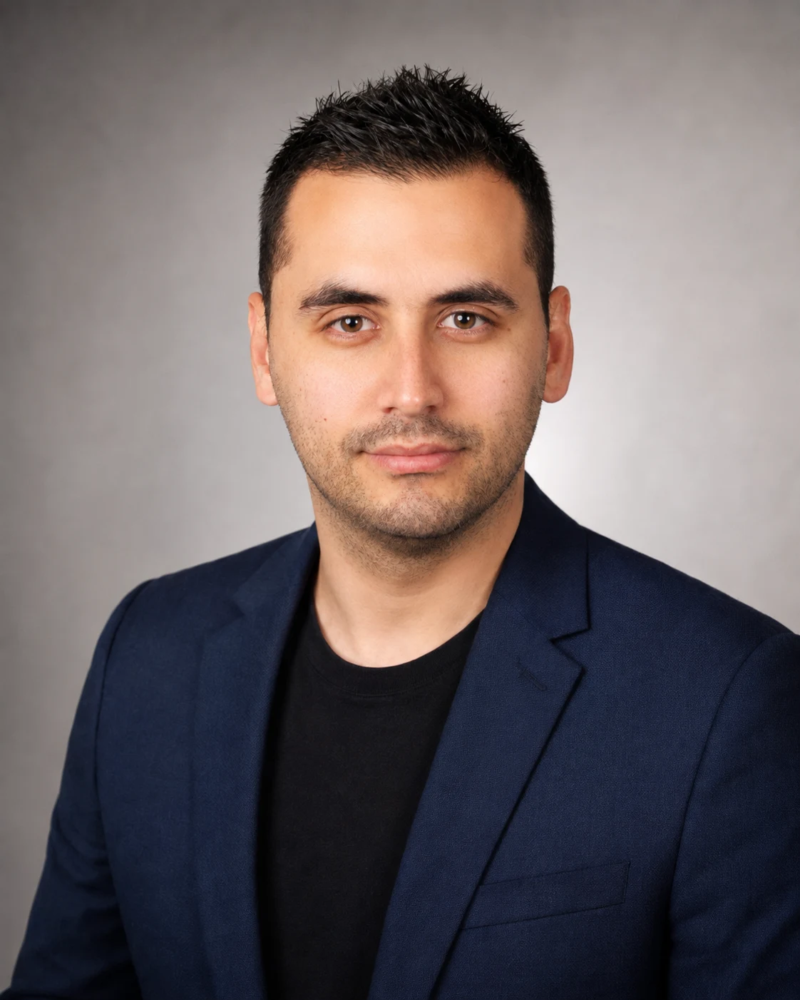

Développeur Full Stack formé en Python et JavaScript.
J’ai terminé avec succès deux programmes techniques et je transforme cette formation en projets web complets et vérifiables.

Profil
Je suis Alin Adrian Ivana
Je suis développeur Full Stack avec une formation LINK Academy terminée en AI & Python Development et Frontend JavaScript Development. Ma formation couvre le backend, le frontend, les bases de données, les services web, les tests logiciels et les fondamentaux de l’IA.
Mon expérience professionnelle internationale m’a appris à communiquer clairement avec des personnes de différentes nationalités, à m’adapter rapidement et à travailler de manière responsable sous pression tout en respectant les délais et les objectifs.
Les deux programmes ont été terminés avec succès. Je continue à renforcer mon expérience grâce à des projets publics, du code vérifiable et des outils modernes de déploiement.
Formation terminée
Deux programmes techniques terminés avec succès
PY
AI & Python Development
Python, POO, réseaux et HTTP, MySQL/SQL, Django, accès aux données et ORM, services REST, tests/QA, Machine Learning, NLP et LLM.
JS
Frontend JavaScript Development
HTML & CSS, fondamentaux frontend, CSS avancé, Website Building, fondamentaux et programmation avancée JavaScript, Data Access, JavaScript Application Development, Animation/Game Development et Figma.
Expérience pertinente
Un parcours professionnel qui apporte discipline et adaptabilité
CNC
Expérience technique
J’ai travaillé comme programmeur CNC, en réalisant des dessins techniques et en saisissant des paramètres pour la conception de composants.
COM
Communication et coordination
Mon expérience comme opérateur de centre d’appels, superviseur et manager a renforcé ma communication et mon travail orienté objectifs.
INT
Expérience internationale
Mon expérience internationale dans la logistique et le transport de passagers a renforcé mon sens des responsabilités, mon attention et mon adaptabilité.
Principes
Comment je construis mes projets
01 / Clarté
Comprendre le problème avant de coder
Je définis ce que l’application doit faire, à qui elle s’adresse et quel résultat utile elle doit fournir.
02 / Structure
Construire par modules
Je sépare la logique, les données et l’interface afin que le projet puisse être testé et étendu.
03 / Progrès
Publier, tester et améliorer
Une version fonctionnelle vaut plus qu’une idée parfaite qui reste inachevée.